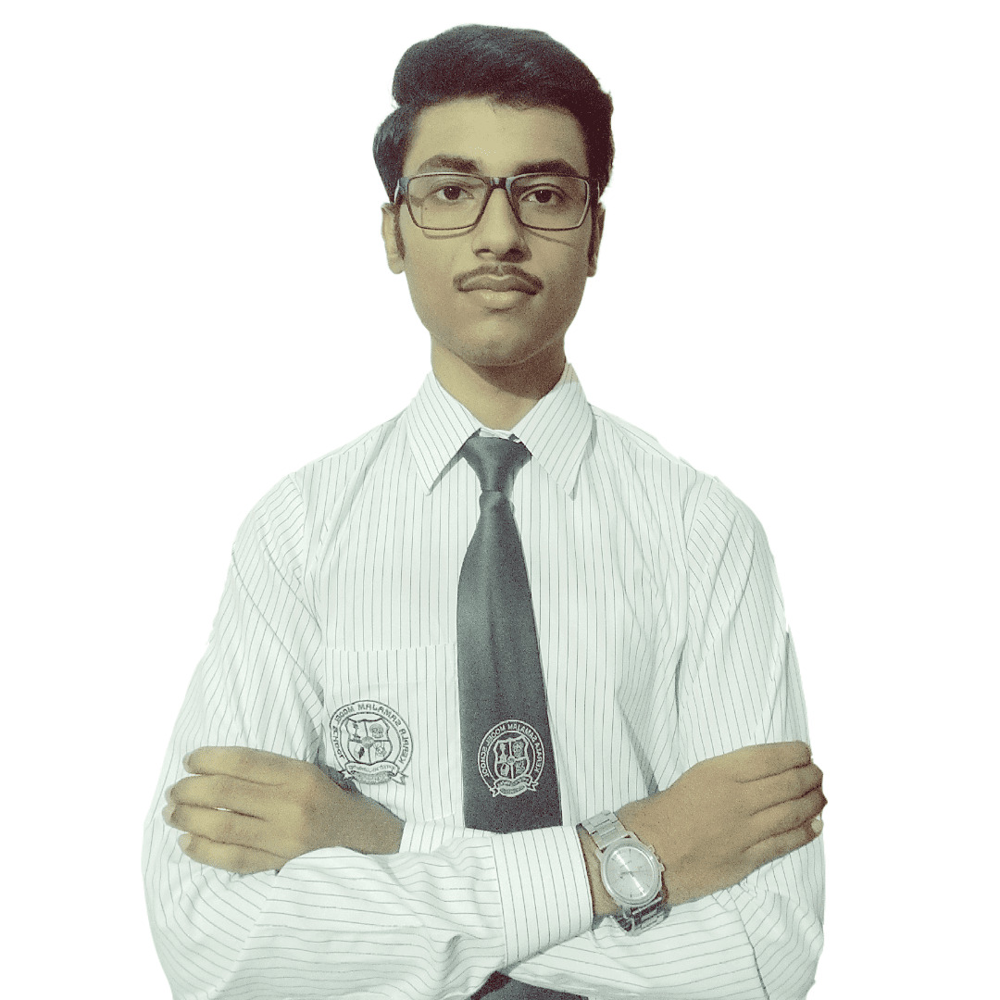

I am a student, Innovater, entrepreneur,
graphic designer and web developer from
the Steel City of India. I like to spend
most of my time in learning and acquiring
new skills and doing research on different
problem statements so that I have a
better understanding of those problems
and accordingly can come up with some
extraordinary solution to it. I am also a
responsible, creative and practical person
who firmly believes in hard work and
education to accelerate in life. My
hobbies are graphic designing, web
development, badminton, cricket and
offcourse interacting and working with
other driven and passionate individuals
like myself.

FOUNDER OF TWO STARTUPS
Food-Mate
Incubated under Gujarat University Startup
and Entrepreneurship Council (GUSEC).
Note:- Project currently under development.
Designers Desk
Sponsored and supported by I-venture@ISB
in collaboration with Atal Innovation Mission
and Niti Aayog
Leading the students of my house in inter school events
Managed all IT and tech related work in cultural fest of
school as Head IT Cordinator of school.
Leading the students of my house in inter school events.
Coordinating with clients to design book covers.
Monitoring and supervising interns managing the social
media handles.
Assisting the team with major decesions in the Startup.
Designing and brainstorming.
Research and development of the product.
Assisting the team in setting up the company.
Among the Top 10 students to get sponsored by ISB in
partnership with Niti Aayog for my start-up Designers Desk.
The Young Tycoons Business Challenge 2021 (YTBC 2021)
was one of the most impactful and novel business plan
competitions launched in 2021 engaging aspiring high-school
entrepreneurs from across the world.
It was an innovation bootcamp in which students with key
digital and entrepreneurial skills had to create their own
online venture by the end of the bootcamp. I was among the
Top 100 winners out of 9000+ students.
It was a compilation and event to nurture and support
ideas and innovations of children. I was among the Top
50 winners of the event out 600+ Teams.
Awarded for extraordinary contribution & dedication in the
field of Innovation in school level.
Education
Indian Certificate of Secondary
Education (ICSE)
Kerala Samajam Model School | 2019 -
2020 | Percentage = 90 %
Indian School Certificate (ISC)
Kerala Samajam Model School | 2021 –
2022 | Percentage = 91 %
Skills
|
| Graphic Designing
|
|
| Web Development |
|
| Innovation
|
|
| IoT | Electronics |
|
| Entrepreneurship |
|
| Creative Problem Solving |
|
| Presentation & Chatbots |
|
|
|